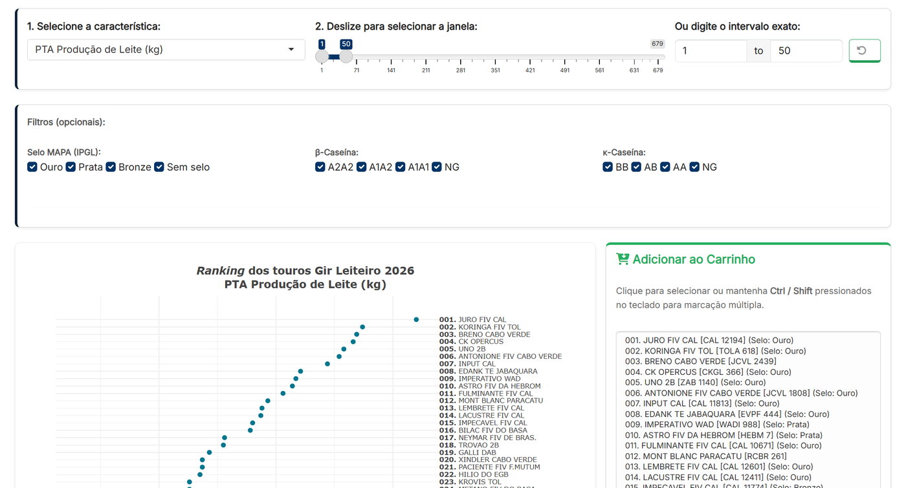
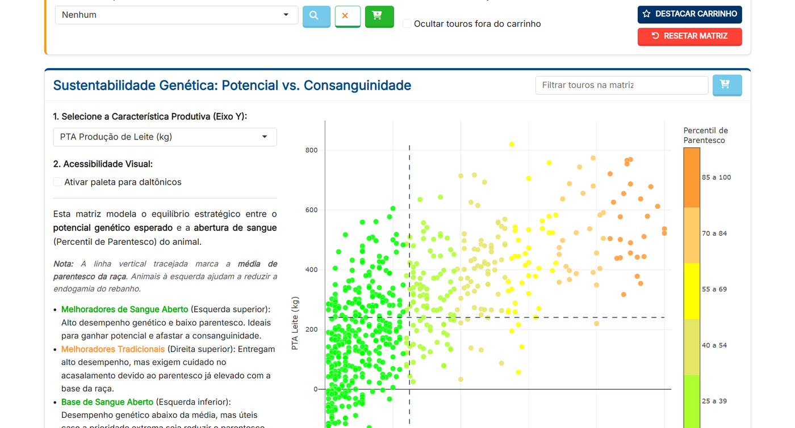
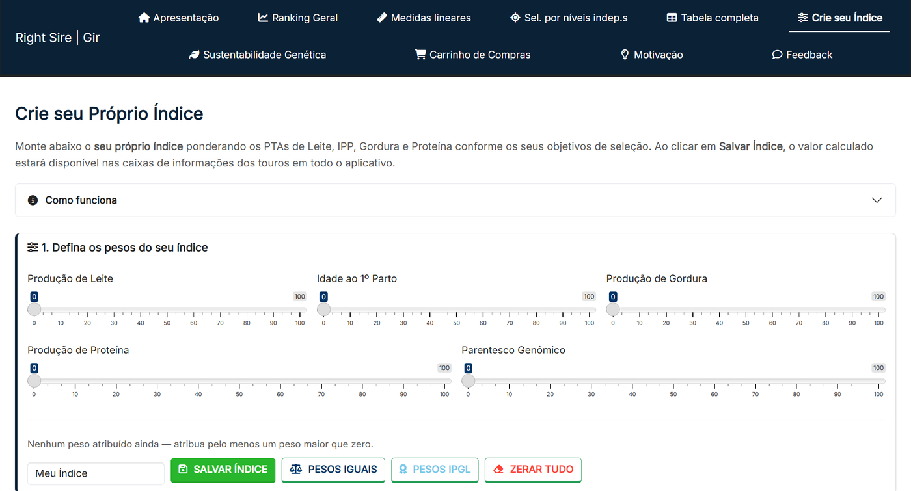
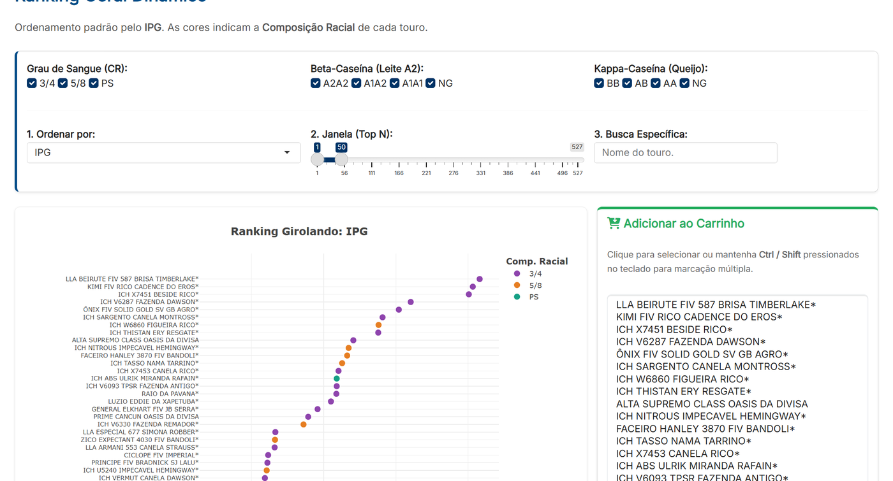
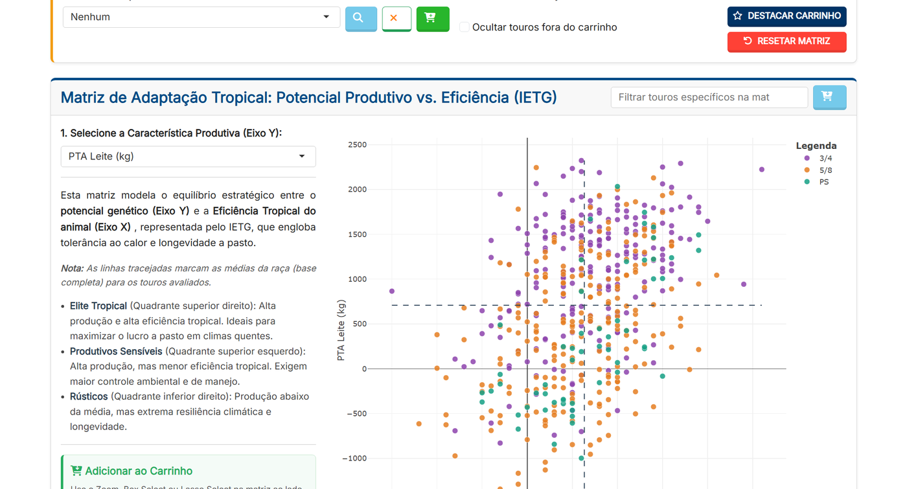

Desenvolvimento integral da programação de duas aplicações web em R Shiny (Right Sire) para transformar os Sumários de Touros 2026 do Gir Leiteiro e do Girolando em ambientes interativos de análise genética — sem abrir mão da responsabilidade estatística.
No contexto de iniciação científica vinculada ao melhoramento genético de bovinos leiteiros na Embrapa, implementei duas aplicações interativas voltadas aos Sumários 2026 do Gir Leiteiro (PNMGL — ABCZ / ABCGIL / Embrapa) e do Girolando (PMGG — ABCG / Embrapa).
O projeto foi idealizado e conduzido pelo orientador, responsável pela concepção geral das análises e pela sugestão de ferramentas de domínio ao longo do percurso. Fiquei responsável por toda a programação das aplicações, estruturando a interface, a reatividade e as visualizações interativas.
A proposta central
Não bastava transpor tabelas para o navegador. O objetivo era dar autonomia a criadores e pesquisadores para cruzar critérios genéticos conforme o perfil de cada rebanho.
Por que um documento estático restringe a seleção genética
Os sumários oficiais reúnem dezenas de avaliações genéticas (PTAs produtivas, reprodutivas, compostos morfológicos, genótipos de proteínas do leite e parentesco), mas o formato estático em PDF limita o leitor às ordenações fixas já impressas na publicação. Quando o criador precisa combinar simultaneamente produção de leite, conformação funcional, genótipo A2A2 e controle de consanguinidade, a triagem manual torna-se lenta e sujeita a perdas.
Para resolver esse problema, ambas as aplicações foram construídas sobre uma arquitetura modular compartilhada em R, utilizando Shiny, bslib com Bootstrap 5 para organização responsiva de painéis e cartões, e Plotly para seleção gráfica direta (zoom, caixas de corte e adição em lote).
Rankings e filtrosOrdenação dinâmica com janela deslizante (Top N), busca por reprodutor e filtros por marcadores genéticos (β-caseína e κ-caseína).
Níveis independentes e STAGráficos de dispersão interativos com linhas de referência nos eixos X e Y e réguas de seleção para características lineares na escala padronizada STA.
Tabela e carrinho persistenteConsulta customizável da tabela completa (incluindo genealogia) integrada a um carrinho transversal para consolidar e revisar os touros selecionados.
03 / Minha contribuição
Implementação integral em R Shiny
Programei integralmente os dois aplicativos. Parte dos cálculos iniciais existia em um script preliminar em R; a partir dele, estruturei toda a lógica reativa do servidor, a construção dos componentes visuais em bslib, a interatividade dos gráficos em Plotly e o fluxo de seleção entre abas.
Enquanto o orientador direcionou a concepção zootécnica e propôs aperfeiçoamentos funcionais, minha responsabilidade técnica foi traduzir cada requisito em ferramentas estáveis, claras e reprodutíveis para o usuário final.
04 / Evolução do projeto
Revisão contínua de escopo
As aplicações não foram uma simples transcrição do script inicial. Ao longo do desenvolvimento, testamos novas formas de cruzamento multivariado, adaptamos a interface às especificidades de cada programa de melhoramento (PNMGL e PMGG) e reavaliamos criticamente quais saídas estatísticas deveriam permanecer visíveis.
Essa evolução uniu decisões de engenharia de interface — como sincronizar a seleção gráfica com o carrinho de compras — a decisões metodológicas sobre a interpretação das estimativas genéticas.
05.A / Aplicação 1 · Sumário Brasileiro de Touros Gir 2026 (PNMGL)
Voltado aos 679 touros avaliados no Sumário Gir Leiteiro 2026 (ABCZ / ABCGIL / Embrapa), o aplicativo incorpora ferramentas desenhadas especificamente para os critérios de seleção e estrutura populacional da raça:
Filtros oficiais no Ranking Geral: recorte imediato pelo Selo MAPA (IPGL) (Ouro, Prata, Bronze e Sem selo), combinado aos genótipos de β-caseína (A2A2, A1A2, A1A1) e κ-caseína (BB, AB, AA).
Crie seu Próprio Índice: módulo que permite ao usuário atribuir pesos de 0 a 100 para PTAs de Leite, Idade ao 1º Parto, Gordura, Proteína e Parentesco Genômico (ou carregar os pesos oficiais do IPGL), propagando o índice salvo para as caixas de informação de todo o aplicativo.
Matriz de Sustentabilidade Genética: visualização estratégica de Potencial Produtivo vs. Percentil de Parentesco para destacar Melhoradores de Sangue Aberto (alto desempenho com menor endogamia), contando também com opção de paleta acessível para daltônicos.

Ranking Geral dinâmico dos 679 touros Gir Leiteiro com filtros por Selo MAPA (IPGL), β-caseína e κ-caseína integrados à seleção em lote para o carrinho.

Matriz de Sustentabilidade Genética (Potencial vs. Consanguinidade), auxiliando a identificação de reprodutores de sangue aberto e o controle da endogamia.

Módulo Crie seu Próprio Índice: ponderação customizada de PTAs produtivas, reprodutivas e de parentesco genômico conforme o objetivo do selecionador.
Desenvolvido para explorar os 527 touros do Programa de Melhoramento Genético do Girolando (PMGG 2026 — ABCG / Embrapa), o aplicativo adapta a arquitetura Right Sire à diversidade de graus de sangue e aos múltiplos índices compostos da raça:
Composição Racial e ordenamento pelo IPG: classificação padrão pelo Índice de Produção Girolando (IPG), com filtragem e codificação visual por grau de sangue (3/4, 5/8 e PS), além de marcadores para leite A2 e aptidão queijeira.
Índices de Desempenho em Gráfico de Radar: comparação simultânea de até 4 touros sobrepostos na escala padronizada STA (-3 a +3) contemplando os índices compostos oficiais (ILG, IPPLG, IETG, IFPG, IRG e IQLG).
Matriz de Adaptação Tropical: cruzamento entre características produtivas e o Índice de Eficiência Tropical Girolando (IETG — tolerância ao calor e longevidade a pasto), diferenciando reprodutores de Elite Tropical, Produtivos Sensíveis e Rústicos.
Avaliação Linear SALG e painel genômico completo: exploração por réguas STA, compostos morfológicos (CSLG, CSMG, CFLG, CGG), marcador DGAT1 e triagem de anomalias genéticas (BLAD, DUMPS, CVM, Citrulinemia, BS e FXID).

Ranking Geral Dinâmico do PMGG 2026 ordenado pelo IPG, com distinção cromática por composição racial (3/4, 5/8 e PS) e filtros de caseínas.

Matriz de Adaptação Tropical (Potencial Produtivo vs. IETG), evidenciando o equilíbrio entre volume de produção, tolerância ao calor e longevidade a pasto.
06 / Decisão técnica×
Nem toda ferramenta implementada deve permanecer
Responsabilidade estatística
Remover uma funcionalidade pouco informativa também é parte da análise
Durante o desenvolvimento, uma das ferramentas previstas inicialmente foi descartada porque os intervalos de confiança associados às estimativas eram excessivamente amplos e pouco informativos para orientar a decisão prática do selecionador.
Em vez de manter o recurso apenas por já estar codificado, optamos por retirá-lo da interface final. Uma aplicação estatística deve ser avaliada pela qualidade e utilidade da incerteza que comunica, não apenas pela quantidade de cálculos que exibe.
O papel da ferramenta interativa é qualificar a decisão do usuário — evitando que estimativas com baixa precisão induzam interpretações equivocadas.
07 / Resultados
Duas aplicações publicadas
Os aplicativos do Gir Leiteiro e do Girolando estão concluídos e publicados em nuvem na plataforma shinyapps.io, reunindo recursos interativos para consulta dos Sumários de Touros 2026.
Limites e escopo atual: o resultado demonstrável consiste nas duas aplicações em funcionamento; ainda não há métricas de telemetria pós-publicação que permitam quantificar seu efeito no processo decisório dos criadores. Além disso, conforme sinalizado no próprio aviso inicial das aplicações, esta primeira versão foi projetada prioritariamente para telas de computador e notebook.
08 / Aprendizados
O que este ciclo ensinou
Em novos projetos em R Shiny, adotaria desde o primeiro protótipo os componentes modernos do ecossistema bslib e Bootstrap 5, o que reduz retrabalho de layout e facilita a padronização visual entre múltiplas aplicações.
A construção conjunta dos dois sistemas também evidenciou o ganho de estruturar módulos reutilizáveis quando diferentes bases compartilham o mesmo fluxo analítico, mas exigem regras específicas de negócio.
Síntese técnica
Competências demonstradas
Programação integral de aplicações web reativas em R, Shiny, bslib e Bootstrap 5.
Construção de visualizações interativas em Plotly com seleção direta e filtros cruzados.
Adaptação de uma mesma arquitetura analítica às particularidades genéticas de duas raças.
Critério estatístico para avaliar precisão de estimativas antes de expô-las ao usuário.